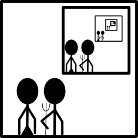
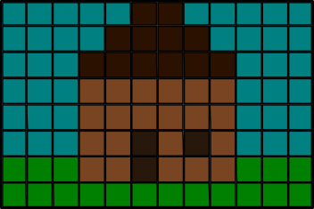
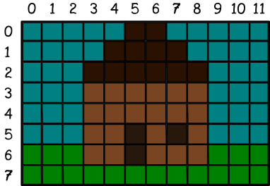
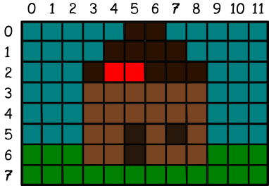
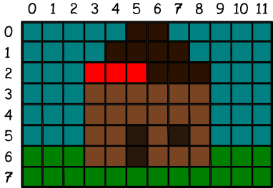
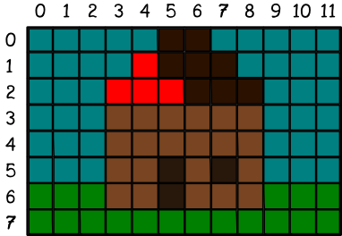
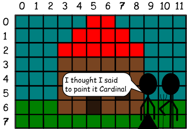

Chapter 11: Recursion: Calling yourself
To understand recursion, you must first understand recursion. -Anon
If you already know what recursion is, just remember the answer. Otherwise, find someone who is standing closer to Douglas Hofstadter than you are; then ask him or her what recursion is. - Andrew Plotkin.
Recursion is one of the traditional scary topics of computer science. Scary like stumbling across a velociraptor on Valentine's Day, after he was just dumped by his velociraptor girlfriend? No, not really. Scary like seeing me in the morning before I've had a cup of coffee? Close.
So let's explore recursion without any computers first.
Our heroes are in the foreground, but there's a picture of them in the background, which features another picture of them in the background, which features another picture of them in the... Well, you get the idea.
Here's another one. There's a pretty neat organization out there called GNU that had a name which is a recursive acronym. The acronym is part of the definition of the acronym. GNU stands for GNU's Not Unix. Of course, the GNU in the definition stands for GNU's Not Unix, and that GNU stands for GNU's Not Unix, and so on.
PHP does something similar. PHP stands for PHP Hypertext Processor, and the PHP in the definition stands for PHP Hypertext Processor, and so on once again.
Finding a Sum
This may be one time (these times will become more frequent), when it makes more sense to just look at a program. Let's write a simple one that we've done a whole bunch of time. Let's find the sum of a list. Here's our old program.
- def sum(ourList):
- total = 0
- for i in ourList:
- total+=i
- return total
We can rewrite that program recursively. Rather than talk you through it, try reading it first:
- def recursiveSum(ourList):
- if len(ourList) == 1:
- return ourList[0]
- else:
- return ourList[0] + recursiveSum(ourList[1:])
Here's how I read it. If our list has only one number in it, then the sum is that number. Otherwise, take the first number and add it to the sum of the rest of the numbers.
But what happens with the sum of the rest of the numbers? Well, Python will take ourList[1:] and give it to recursiveSum. Good old recursiveSum will take the first number of the new list (the second number of the original list) and add it to the sum of the rest of the list, and then return that sum to the original function.
So, to play that all out. Let's run through a sample. If our list was [7,5,3] and we wanted to find the sum, we'd do this:
- recursiveSum([7,5,3])
Since the list has more than one number in it, we skip the if statement and do the else. So this function is going to return ourList[0] + recurisveSum(ourList[1:]). So for this program, that looks like this:
- return 7 + recursiveSum([5,3])
But Python first needs to determine a value for recursiveSum([5,3]). So it calls the function again, this time leaving out the first number of the list. That second function call is going to look like this:
- return 5 + recursiveSum([3])
The final function call is the easiest. recursiveSum([3]) will simply return 3, as the sum of 3 is 3. So let's substitute each of these values in. I'm putting some extra parenthesis in to make it easier to see what values come from which function calls.
- return 7 + (5 + (3))
Calculating Fibonacci Numbers
Fibonacci Numbers are one of the classic introductory exercises when learning recursion. To make Fibonacci numbers, you start with 0 and 1 and add them together. Then take the sum and add it to the second of the original numbers. Then take the new sum and add it to our first sum, and so on. So you get a sequence like this:
0,1,1,2,3,5,8,13,21
You should probably give this a try first, then take a look at my answer.
- def fib(number):
- if number == 0:
- return 0
- elif number == 1:
- return 1
- else:
- return fib(number-1) + fib(number-2)
So here, we clearly see if statements for our base cases - 0 and 1. We also see the rest of the definition - a Fibonacci number is the two previous Fibonacci numbers added together. Identifying your base cases is a very important first step in recursion. If you don't do it properly, or at all, then your recursive function will run forever.
A more graphical example
Most of the examples we've looked at so far are either trivially easy, or woefully inefficient. But recursion is used in the real world all the time. One really common recursive algorithm is called flood-fill. You can think of it as a paint bucket.
There's an image format called bitmap that defines an image as a map of bits (obviously). This means that there's a grid of things called pixels, which each have one color. Here's an example.
It's a pretty house, but I've always wanted a nicer roof. Maybe a bright red one, to alert other survivors of the zombie apocalypse that I'm still alive. Let's write a function to recolor our roof.
This first thing we need to do is pick a coordinate system for our bitmap. With almost all graphics, the top left corner of the image is 0,0. We'll follow the same convention.
So our plan is going to be to click on a part of our house's roof and change the color to red. So, another way to look at that would be to say we're going to change the clickedColor to the targetColor. We'll also know two more things - the X and the Y that we're looking at.
So now we've defined our basic vocabulary, so we can look at our base situations. Two of those situations deal with the color we're looking at. If the color at X,Y is not the clickedColor, then we should stop changing colors. Similarly, if the color at X,Y is already the targetColor, then we should stop changing colors. The last base case is when we're off the edge of the image - when X or Y is less than 0 or greater than the width or height of the image.
So, let's look at our code so far:
- def floodfill(X, Y, targetColor, clickedColor):
- if X or Y is off the edge of the image:
- return
- elif X,Y is targetColor:
- return
- elif X,Y is not clickedColor:
- return
Beyond our three base conditions, there's one other option - we need to be changing the color. In that case, we'll set the current X,Y to our targetColor and then call floodfill on each adjacent square.
- def floodfill(X, Y, targetColor, clickedColor):
- if X or Y is off the edge of the image:
- return
- elif X,Y is targetColor:
- return
- elif X,Y is not clickedColor:
- return
- X,Y = targetColor #setting X,Y to our targetColor
- floodfill(x-1,y,targetColor,clickedColor) #to the left
- floodfill(x+1,y,targetColor,clickedColor) #to the right
- floodfill(x,y-1,targetColor,clickedColor) #up
- floodfill(x,y+1,targetColor,clickedColor) #down
- return
While that isn't exactly functional Python, it's a good description of our entire algorithm. Some would call it pseudocode. Let's walk through what happens when we click. I'll click on cell 5,2. This is function call number 1.
First we check our if statements - none of them are true. So we immediately set 5,2 to our target color. That gives us this:
Next line down of our algorithm says to call floodfill on the left. So we start a new function. This is functional call number 2. It sees the if statements are false, so it recolors cell 4,2.
Once again, we continue calling floodfill on the left. This is a 3rd function call, which we call on 3,2.
So here's where things get weird. We've just finished recoloring, so we once again call floodfill to the left. This is our 4th function call, on 2,2. But this time we hit an if statement. The color at 2,2 is not equal to our clickedColor, so our function returns. We go back to our 3rd function call. The next line down, we call to the right. This would be function call number 5, back on 4,2.
Ah! But the color of cell 4,2 is already targetColor. So we go back to the 3rd function call. Now we look up for function call 6 (not clickedColor) and then down for number 7 (also not clickedColor). So our 3rd function call is finally able to return. That takes us back to our 2nd function call, which is now able to look right for call number 8 (already targetColor). But then it makes a new function call 9 on the cell above - cell 4,1. It colors that one red. Then we continue with call 9, looking left, then right, then right again, etc.
This process seems terribly slow, but actually happens pretty quick. It also carries the advantage of being able to color any shape.
This website will be taken offline before the end of 2011